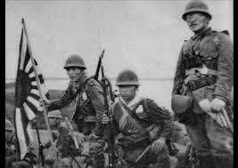

Sa pambobomba ng Amerika sa Hiroshima, gumanti ang Hapon sa paglusob nito sa Pearl Harbor noong Disyembre 7, 1941. Dahil nasa isalalim ng kolonya ng Estados Unidos kaya’t sinakop ng Hapon ang Pilipinas. Ngunit para sa karamihang manunulat
na Pilipino, isang biyaya sa larangang panitikan ng bansa ang pangyayaring ito. Sumibol nang lubos ang panitikan ng bansa sa panahong ito dahil ipinagbawal ng namumunong Hapon ang paggamit ng wikang Ingles at itinaguyod ang pagpapayaman
sa panitikan gamit ang mga katutubong wika sa bansa. Sinunog din ang mga aklat na nasusulat sa Ingles upang masigurong hindi mababahiran ng kanluraning ideya ang panitikang nililikha.
Ang panahong ito sa kasaysayan ng bansa at ng panitikan ang tinaguriang Gintong Panahon ng Panitikang Filipino dahil higit na malaya ang mga Pilipino (kaysa noong sa Amerikano) sa pagsulat ng panitikan at pagsanib ng kultura, kaugalian at
paniniwalang Pilipino sa mga ito. Sa panahon ding ito kinilala ang mga manunulat na babaeng Pilipino sa pangalan nina Liwayway A. Arceo at Genoveva Edroza-Matute dahil sa mga makintal na maka-feministang maikling-kwento. Dahil sa dinalang
haiku (maikling tulang may tatlong taludtod at may bilang na pantig na 5-7-5 sa taludtod), nagkaroon ang mga Pilipino ng tanaga(maikling tulang may apat na taludtod at ang bilang ng pantig ay 7-7-7-7)
Reference: http://kadipanvalsci.blogspot.com/2010/08/panitikang-filipino-sa-ibat-ibang.html